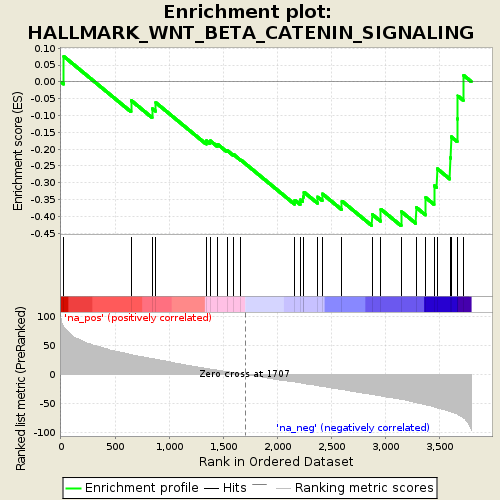
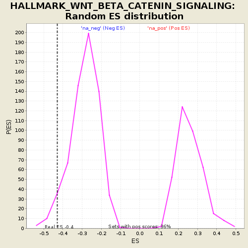

| | | Dataset | CA20_KD_mean_summary.rnk |
| Phenotype | NoPhenotypeAvailable |
| Upregulated in class | na_neg |
| GeneSet | HALLMARK_WNT_BETA_CATENIN_SIGNALING |
| Enrichment Score (ES) | -0.42869475 |
| Normalized Enrichment Score (NES) | -1.4991976 |
| Nominal p-value | 0.039308175 |
| FDR q-value | 0.163314 |
| FWER p-Value | 0.501 |
Table: GSEA Results Summary

Fig 1: Enrichment plot: HALLMARK_WNT_BETA_CATENIN_SIGNALING
Profile of the Running ES Score & Positions of GeneSet Members on the Rank Ordered List
| PROBE | GENE SYMBOL | GENE_TITLE | RANK IN GENE LIST | RANK METRIC SCORE | RUNNING ES | CORE ENRICHMENT | | 1 | CCND2 | | | 26 | 82.956 | 0.0757 | No |
| 2 | LEF1 | | | 649 | 34.241 | -0.0552 | No |
| 3 | PPARD | | | 845 | 27.412 | -0.0797 | No |
| 4 | DVL2 | | | 877 | 26.296 | -0.0617 | No |
| 5 | PTCH1 | | | 1344 | 10.374 | -0.1750 | No |
| 6 | TCF7 | | | 1380 | 9.307 | -0.1750 | No |
| 7 | FRAT1 | | | 1447 | 7.470 | -0.1851 | No |
| 8 | HEY1 | | | 1537 | 4.789 | -0.2039 | No |
| 9 | TP53 | | | 1598 | 3.469 | -0.2164 | No |
| 10 | WNT1 | | | 1665 | 1.263 | -0.2326 | No |
| 11 | HDAC2 | | | 2163 | -12.880 | -0.3516 | No |
| 12 | AXIN1 | | | 2215 | -14.412 | -0.3508 | No |
| 13 | AXIN2 | | | 2240 | -15.431 | -0.3418 | No |
| 14 | ADAM17 | | | 2248 | -15.770 | -0.3280 | No |
| 15 | CSNK1E | | | 2376 | -19.233 | -0.3425 | No |
| 16 | PSEN2 | | | 2420 | -20.637 | -0.3334 | No |
| 17 | GNAI1 | | | 2600 | -26.221 | -0.3548 | No |
| 18 | FZD1 | | | 2878 | -34.357 | -0.3940 | Yes |
| 19 | HDAC11 | | | 2959 | -36.857 | -0.3786 | Yes |
| 20 | SKP2 | | | 3149 | -43.006 | -0.3859 | Yes |
| 21 | NOTCH1 | | | 3285 | -48.889 | -0.3730 | Yes |
| 22 | HDAC5 | | | 3374 | -52.390 | -0.3442 | Yes |
| 23 | JAG1 | | | 3453 | -56.367 | -0.3088 | Yes |
| 24 | NUMB | | | 3480 | -57.893 | -0.2581 | Yes |
| 25 | NCOR2 | | | 3600 | -64.454 | -0.2255 | Yes |
| 26 | FZD8 | | | 3609 | -64.818 | -0.1631 | Yes |
| 27 | MYC | | | 3668 | -68.808 | -0.1100 | Yes |
| 28 | CTNNB1 | | | 3673 | -69.300 | -0.0420 | Yes |
| 29 | RBPJ | | | 3724 | -75.263 | 0.0196 | Yes |
Table: GSEA details [plain text format]

Fig 2: HALLMARK_WNT_BETA_CATENIN_SIGNALING: Random ES distribution
Gene set null distribution of ES for HALLMARK_WNT_BETA_CATENIN_SIGNALING